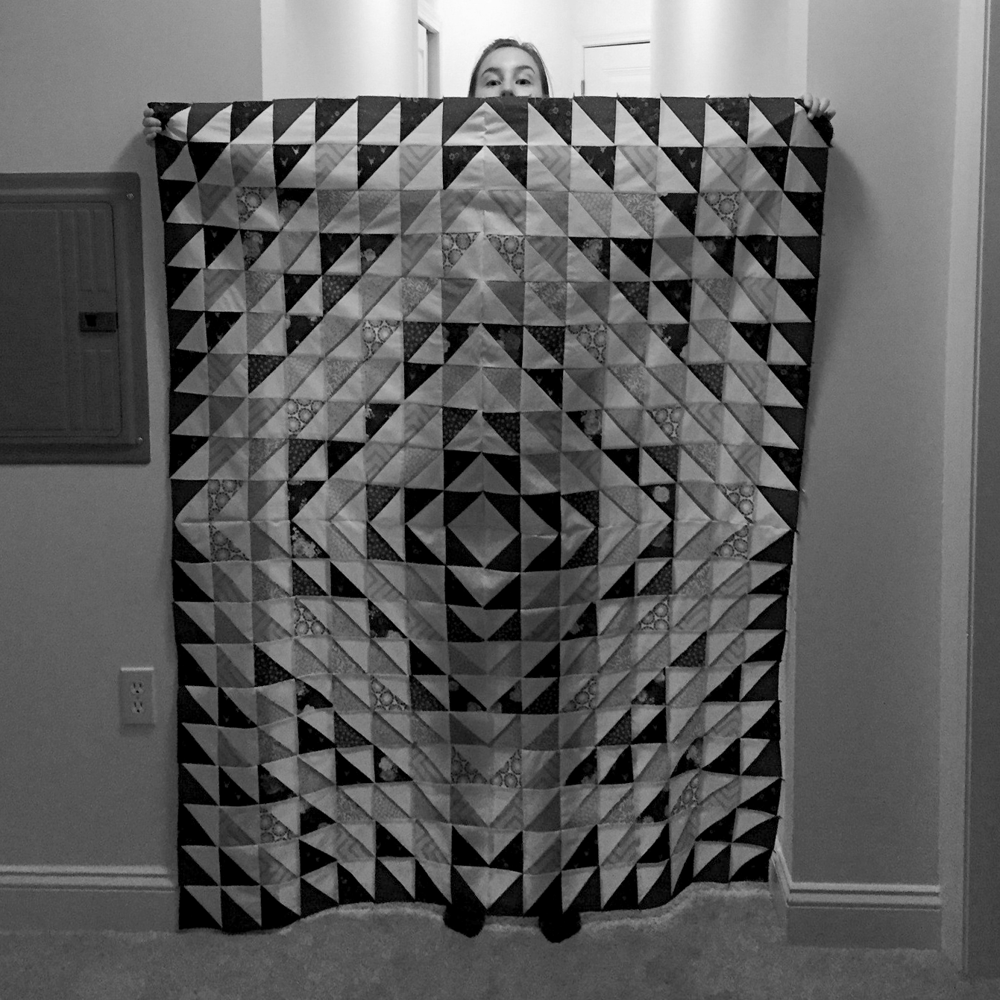

about
Things I do: web and mobile UI/UX, photography, design, quilting, printmaking, and live in NYC Things I've done: earned my BS in Genetics from Clemson University (2014) Things I like: learning new things, art, sewing, bad movies, my cat Davey, traveling, scrabble, dogs, camping & hiking, building things
photos


designs
26/59 experimenting with lines and numbers - 2016
Ideas for quilt designs; muted primary colors and shadows - 2016

A simple type inspired by folding paper - 2012

Playing around with colors and overlaps - endless possibilities - 2015
Traditional half-square quilt, machine sewed and quilted - 2016


Experimenting with cinemagraphs - 2014